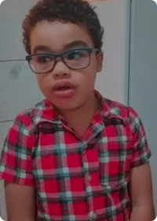
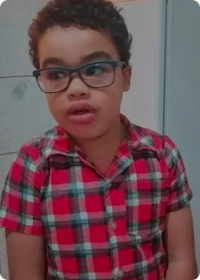

História do meu filho - Vitor Daniel dos Reis da Silva | Nascimento: 24/02/2017
Victor Daniel, foi diagnosticado aos quatro meses de gestaçãocom hidronefrose bilateral, começamos um acompanhamento mais detalhado ao logo da gravidez na Santa Casa de Misericórdia de Belém. Ao nascer realizou vários exames onde constatou DRC (Doença Renal Crônica) secundário a válvula de uretra posterior (VUP), optando pelo tratamento conservador com medicamentos, alimentação e exames periódicos para avaliação da progressão da doença.
Quando surgiu a necessidade de fazer hemodiálise o hospital de Belém não tinhaequipamentos para realizar dialise em bebês, foi então que entraram em contato com o hospital de São Paulo. No dia 26/05/2017, fomos para São Paulo, não iniciou de imediato hemodiálise retomando o tratamento conservador, contudo, no dia 28/07/2017foi passado um cateter para começar a hemodiálise que ficou durante por 1 anos e 9 meses, mais de8 transfusões de sangue, foram 10 passagens de cateter, fez vesicostomia, passagemde gastrostomiapara ajudar no ganho de peso, conseguiu entrar na fila pro transplante em 2018. Nesse período teve várias intercorrências, foi testado duas vezes em períodos diferentes, mas o rim acabouficando com outro paciente em fila com mais gravidade que Vitor. Finalmente em 05/08/2019 chegou o tão desejado rinzinho e Vitor finalmente conseguiu transplantar com órgão de doadorfalecido.
Vitor hoje está com 6 anos de idade, sendo 4 aninhos de transplante, seguimos indo e vindo nas consultas, ficamos hospedados em casa de apoio. Melhor parte é saber que temos o tratamento que ele precisa e vamos poder voltar para casa e ficarmos juntinhos eu, Vitor e Murilo meu outro filho.
 
